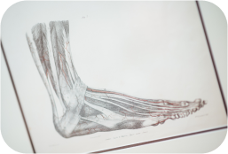

A través de radiografías, los estudiantes podrán examinar las diferentes partes del cuerpo humano y entender cómo están conectadas entre sí, ayudando a una mejor comprensión de sus estudios.
Muestras
Gracias a las muestras 3D, los estudiantes pueden comprender de mejor manera la
estructura del cuerpo humano, gracias a una representación visual y realista.
Videos Anatomía
Los videos proporcionan una forma flexible de estudio, permitiendo a los estudiantes
pausar y rebobinar para un mejor aprendizaje.

Imágenes 2D
Las imágenes 2D ofrecen una visualización clara y precisa de las diferentes partes del
cuerpo humano. Además, un test rápido brinda un aprendizaje interactivo.